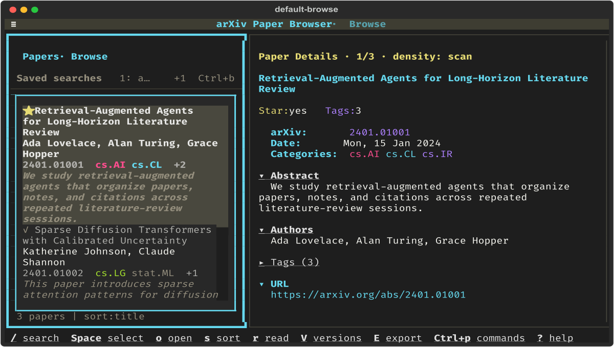

A terminal inbox for arXiv triage.
Scan saved digests or live search results, decide what matters, then annotate, enrich, and export papers without leaving the TUI.

local-first notes, tags, bookmarks, and exports
on-demand citations, trending signals, summaries, and relevance
Install
uv tool install arxiv-subscription-viewer
Alternative: python3.13 -m pip install --user arxiv-subscription-viewer
Workflow pillars
The app is organized around the real paper-review loop: scan, enrich, organize, and export.
Scan quickly
Filter with fuzzy search, structured query tokens, bookmarks, watch lists, history navigation, and keyboard-first movement through loaded papers.
Enrich on demand
Pull in Semantic Scholar citations, HuggingFace daily-paper signals, and LLM summaries, chat, paper comparison, relevance scoring, or auto-tagging only when they help.
Organize the reading queue
Track read state, stars, tags, notes, marks, bookmarks, collections, and spaced-review schedules so your next pass through the literature starts from your own metadata.
Export without lock-in
Open PDFs, copy metadata, export BibTeX/Markdown/RIS/CSV, download files in batches, and snapshot your annotations for backup or migration.
Quick Start
Install once, then choose the workflow that matches how you already follow the literature.
# or: python3.13 -m pip install --user arxiv-subscription-viewer
history/ workflow
Run arxiv-viewer from the directory that contains your history/ folder. The app restores session state, keeps date navigation available, and works well when you review daily digests in order.
$ cd ~/research/arxiv
# Save digest as history/2026-02-13.txt
$ arxiv-viewer
Tip: automate this by writing each digest to history/YYYY-MM-DD.txt.
No-email / API workflow
Skip local digest files entirely and start from live arXiv search results when you want to scan the latest matching papers immediately.
# or: arxiv-viewer search --query "diffusion transformer" --field title
Use this path when you want the latest matching papers without maintaining a local archive first.
Useful launch commands
arxiv-viewer --color never --ascii
arxiv-viewer dates
arxiv-viewer doctor
Default destinations
General exports: ~/arxiv-exports/
PDF downloads: ~/arxiv-pdfs/
Metadata portability: explicit timestamped JSON snapshots
Guide Hub
Use this page as the published entrypoint, the GitHub README for installation and shortcuts, and the docs index for markdown-first browsing inside the repository.
Markdown guide links below open on GitHub so they stay readable from the published site without adding a separate docs platform.
Start here
Main README
Install commands, quick launch examples, feature highlights, and the full keyboard shortcut table.
Repository map
Docs index
Browse the markdown docs set directly when you want a GitHub-friendly table of contents and reading order.
Workflow guide
History mode
Set up history/, ingest daily digests, and use date navigation effectively.
Workflow guide
Search and filters
Learn structured queries, API search flows, bookmarkable filters, and faster scanning patterns.
Automation guide
Markdown digests
Generate daily or weekly non-interactive digests for cron, files, email pipes, or Slack webhooks.
Reference
Configuration reference
Go straight to the config schema when you need export paths, presets, toggles, or enrichment settings.
Support
Troubleshooting
Use this when arxiv-viewer doctor surfaces issues or setup does not behave as expected.
More feature guides
First 2 Minutes
A short keyboard-first walkthrough once the app is open.
?
Open the help overlay and scan the main shortcuts without leaving the paper list.
/
Open search, type something like cat:cs.AI, and narrow the visible papers immediately.
Space
Toggle selection to act on multiple papers at once. Open, export, copy, and download act on the selection, or on the highlighted paper when nothing is selected.
o
Open the current or selected paper in your browser.
E
Open the export menu for BibTeX, Markdown, RIS, CSV, and clipboard workflows. File exports go to ~/arxiv-exports/ by default.
A
Jump into an arXiv API search without restarting the app.
Ctrl+p
Open the command palette for metadata, collections, and advanced workflows.
[ ]
Move to the previous or next digest date when you are in history/ mode.
Advanced Workflows
Start with local browsing or live search, then layer these in when a paper deserves deeper context.
Semantic Scholar
Prerequisites: optional s2_api_key for higher rate limits, plus Ctrl+e at runtime or "s2_enabled": true in config.
First use: press Ctrl+e to enable enrichment, then e on a paper to fetch citations, TLDR, and fields of study. Use R and G after that.
HuggingFace Trending
Prerequisites: toggle with Ctrl+h or enable on startup with "hf_enabled": true.
First use: press Ctrl+h, let the app cross-match the loaded papers, then inspect the HuggingFace section in the detail pane for upvotes, GitHub links, keywords, and summaries.
AI Summary / Chat / Compare / Relevance / Auto-Tag
Prerequisites: configure llm_preset or llm_command; relevance scoring also uses research_interests.
First use: try Ctrl+s for summaries, C for chat, Ctrl+v for comparison, L for relevance scoring, and Ctrl+g for auto-tagging. Custom LLM commands prompt for trust on first execution.